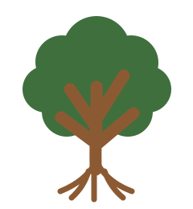

Grow together
Support community gardens, orchards and food-growing spaces with shared resources and peer learning.

NatureConnecting communities, restoring wildlife
Nature North London is a collaborative network of organisations working to strengthen habitats and wildlife corridors radiating out from Hampstead Heath.
Explore the network
Every marker is a place where people and nature meet. Filter the map, select a marker, then follow the project link to learn more.
Map note: the base map and named park locations show real geography. Community project names and descriptions are illustrative placeholders, ready to replace with verified Nature North London data.
Nature North London
A collaborative network of organisations working to strengthen habitats and wildlife corridors radiating out from Hampstead Heath.
What connects us
Nature does not stop at borough boundaries. By working along shared corridors, local projects can make a bigger difference together.
Support community gardens, orchards and food-growing spaces with shared resources and peer learning.
Strengthen green routes so pollinators, birds and other wildlife can move through the city.
Make practical local knowledge visible—from seed saving to habitat surveys and accessible volunteering.
Make your patch part of the picture
Whether you run a garden, support a friends group or simply want to lend a hand, there is a place for you in the network.
Tell us about your project ↗